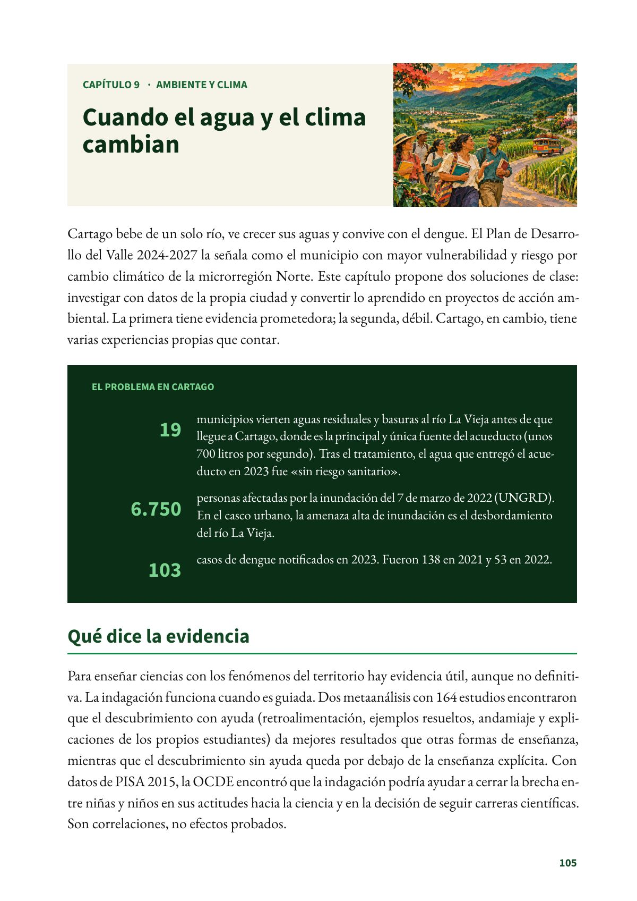
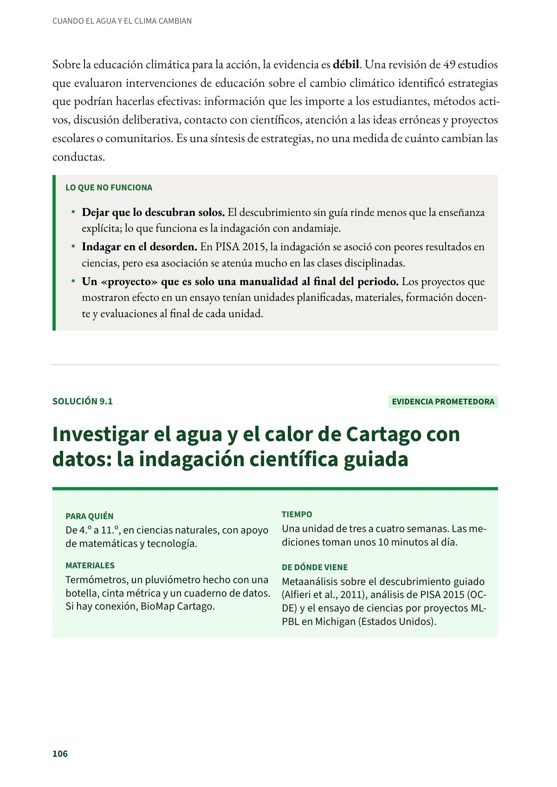

Cuando el agua y el clima cambian
Cartago bebe de un solo río, ve crecer sus aguas y convive con el dengue.
PDF · 2 págs. · 1,3 MBCartago bebe de un solo río, ve crecer sus aguas y convive con el dengue. El Plan de Desarrollo del Valle 2024-2027 la señala como el municipio con mayor vulnerabilidad y riesgo por cambio climático de la microrregión Norte. Este capítulo propone dos soluciones de clase: investigar con datos de la propia ciudad y convertir lo aprendido en proyectos de acción ambiental. La primera tiene evidencia prometedora; la segunda, débil. Cartago, en cambio, tiene varias experiencias propias que contar.
El problema en Cartago
- 19 municipios vierten aguas residuales y basuras al río La Vieja antes de que llegue a Cartago, donde es la principal y única fuente del acueducto (unos 700 litros por segundo). Tras el tratamiento, el agua que entregó el acueducto en 2023 fue «sin riesgo sanitario».
- 6.750 personas afectadas por la inundación del 7 de marzo de 2022 (UNGRD). En el casco urbano, la amenaza alta de inundación es el desbordamiento del río La Vieja.
- 103 casos de dengue notificados en 2023. Fueron 138 en 2021 y 53 en 2022.
Qué dice la evidencia
Para enseñar ciencias con los fenómenos del territorio hay evidencia útil, aunque no definitiva. La indagación funciona cuando es guiada. Dos metaanálisis con 164 estudios encontraron que el descubrimiento con ayuda (retroalimentación, ejemplos resueltos, andamiaje y explicaciones de los propios estudiantes) da mejores resultados que otras formas de enseñanza, mientras que el descubrimiento sin ayuda queda por debajo de la enseñanza explícita. Con datos de PISA 2015, la OCDE encontró que la indagación podría ayudar a cerrar la brecha entre niñas y niños en sus actitudes hacia la ciencia y en la decisión de seguir carreras científicas. Son correlaciones, no efectos probados.
Sobre la educación climática para la acción, la evidencia es débil. Una revisión de 49 estudios que evaluaron intervenciones de educación sobre el cambio climático identificó estrategias que podrían hacerlas efectivas: información que les importe a los estudiantes, métodos activos, discusión deliberativa, contacto con científicos, atención a las ideas erróneas y proyectos escolares o comunitarios. Es una síntesis de estrategias, no una medida de cuánto cambian las conductas.
Lo que no funciona
- Dejar que lo descubran solos. El descubrimiento sin guía rinde menos que la enseñanza explícita; lo que funciona es la indagación con andamiaje.
- Indagar en el desorden. En PISA 2015, la indagación se asoció con peores resultados en ciencias, pero esa asociación se atenúa mucho en las clases disciplinadas.
- Un «proyecto» que es solo una manualidad al final del periodo. Los proyectos que mostraron efecto en un ensayo tenían unidades planificadas, materiales, formación docente y evaluaciones al final de cada unidad.
Fuentes del capítulo
Fuentes
Alcaldía de Cartago. (2024). Diagnóstico sectorial. Plan de Desarrollo Territorial 2024-2027 «Más progreso, mejor futuro» (págs. 33, 248-249 y 266). 2025.cartago.gov.co
Alcaldía de Cartago. (2024). Plan Territorial de Salud 2024-2027 (tabla 53). 2025.cartago.gov.co
Alfieri, L., Brooks, P. J., Aldrich, N. J. y Tenenbaum, H. R. (2011). Does discovery-based instruction enhance learning? Journal of Educational Psychology, 103(1), 1–18. doi.org
Asamblea Departamental del Valle del Cauca. (2024). Plan de Desarrollo Departamental 2024-2027 «Liderazgo que transforma» (Ordenanza 655 de 2024), microrregión Norte-Cartago. ogpt.valledelcauca.gov.co
Centro de Estudios e Investigaciones Docentes Cartago. (2026). Sedes educativas de Cartago frente al sismo, el calor y la inundación (2026) (Investigaciones del CEID, n.º 2). Subdirectiva SUTEV Cartago. doi.org
Krajcik, J., Schneider, B., Miller, E. A., Chen, I.-C., Bradford, L., Baker, Q., Bartz, K., Miller, C., Li, T., Codere, S. y Peek-Brown, D. (2023). Assessing the effect of project-based learning on science learning in elementary schools. American Educational Research Journal, 60(1), 70–102. doi.org
Monroe, M. C., Plate, R. R., Oxarart, A., Bowers, A. y Chaves, W. A. (2019). Identifying effective climate change education strategies: A systematic review of the research. Environmental Education Research, 25(6), 791–812. doi.org
Mostafa, T., Echazarra, A. y Guillou, H. (2018). The science of teaching science: An exploration of science teaching practices in PISA 2015 [OECD Education Working Papers]. OECD Publishing. doi.org
Unidad Nacional para la Gestión del Riesgo de Desastres. (2026). Emergencias UNGRD (2019-2022) [Conjunto de datos]. Datos Abiertos Colombia. datos.gov.co
Así se ve en el libro
2 páginas
